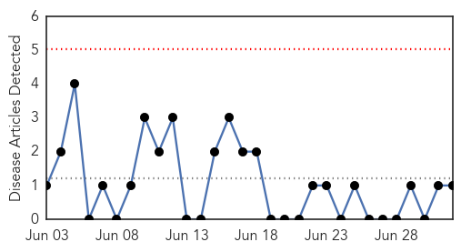

Swine Flu
30-Day Web Trend
1 alerts, 0 warnings

30-Day Twitter Trend
0 alerts, 0 warnings

Article Locations

Article Confidences

Top Articles:
- 0.972
- Stanford study: Immune response to a flu protein yields new insights into narcolepsy
- 0.972
- Patients of diabetes, hypertension to get swine flu shots
- 0.948
- Narcolepsy-Inducing Pandemrix Swine Flu Vaccine Link Better Understood: Study
- 0.940
- Trinidad and Tobago News, Blogs, Videos, Forums and More!
- 0.903
- Scientists find new evidence on GSK vaccine link to narcolepsy
Top Tweets:
-
No tweets found for Jul 02, 2015
Chikungunya
30-Day Web Trend
0 alerts, 0 warnings

30-Day Twitter Trend
0 alerts, 0 warnings

Article Locations

Article Confidences

Top Articles:
Top Tweets:
-
No tweets found for Jul 02, 2015